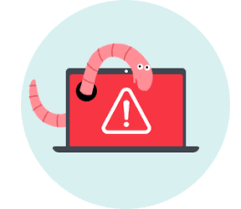
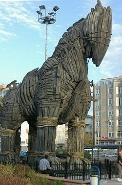

Что бы знать как бороться с вирусами надо знать как они устроены
Давайте посмотрим
Вирусы и черви представляют собой опасные программы, которые могут распространяться через электронную почту или веб-страницы. Вирусы могут повредить файлы или программное обеспечение, хранящиеся на компьютере

Черви распространяются быстрее вирусов — напрямую с одного компьютера на другой. Например, червь электронной почты может осуществлять самостоятельную рассылку по адресам электронной почты из адресной книги пользователя. Интернет-червями осуществляется поиск компьютеров, которые подключены к Интернету и не содержат последние обновления системы безопасности.

«Троянские кони» (трояны) являются опасными программами, которые выглядят безопасными, например, играми, но после активации могут повредить файлы; при этом пользователь не будет об этом знать.